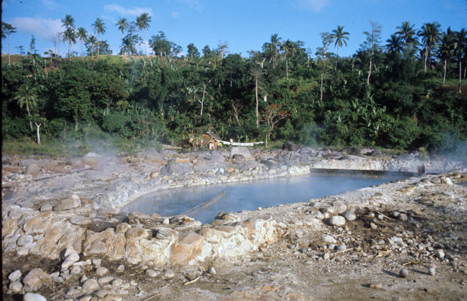
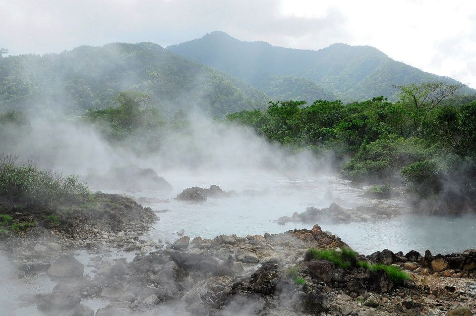

ABOUT THE SPRINGS
Camalig Hot Springs is a tranquil destination known for its therapeutic, naturally warm waters. It is the perfect spot for relaxation and physical recovery, drawing visitors who seek a quiet environment to unwind far from the city's hustle.

NATURAL ORIGINS
These springs are formed by geothermal heat from deep beneath the earth near Mayon Volcano. While locals have enjoyed these healing waters for generations, they have now become a popular choice for tourists seeking the natural wellness benefits of volcanic mineral water.
FACTS
Essentials about the spring's nature.
- Type: Natural Geothermal Spring
- Water Temp: Warm / Therapeutic
- Location: Camalig, Albay
- Vibe: Quiet & Restorative
TRAVEL TIPS
Maximize your comfort and safety.
- 🧼 Essentials: Bring your own towel and toiletries.
- 🌙 Timing: Night visits are best for a cooler breeze.
- ⏱️ Soaking: Limit soak time to 15-20 mins per session.
- ♻️ Cleanliness: Please help keep the pools pristine.
THINGS TO DO
How to spend your relaxation day.
Thermal Soaking
Hydro-therapy
Nature Photography
Meditation
Rest & Recovery
After your soak, don't forget to try the famous Camalig Pinangat at the town center!